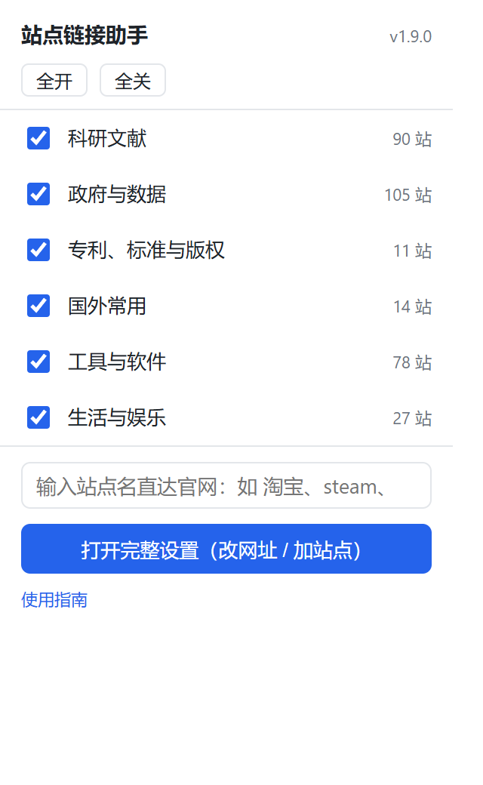
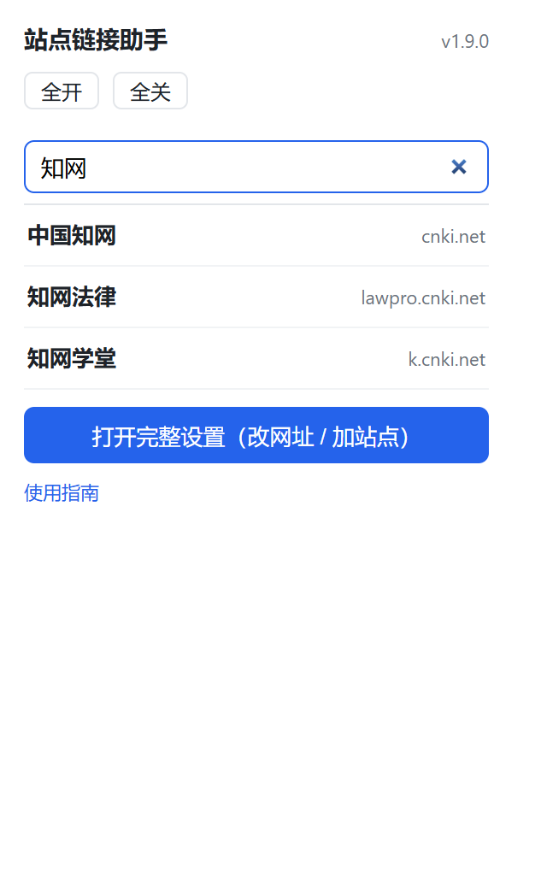
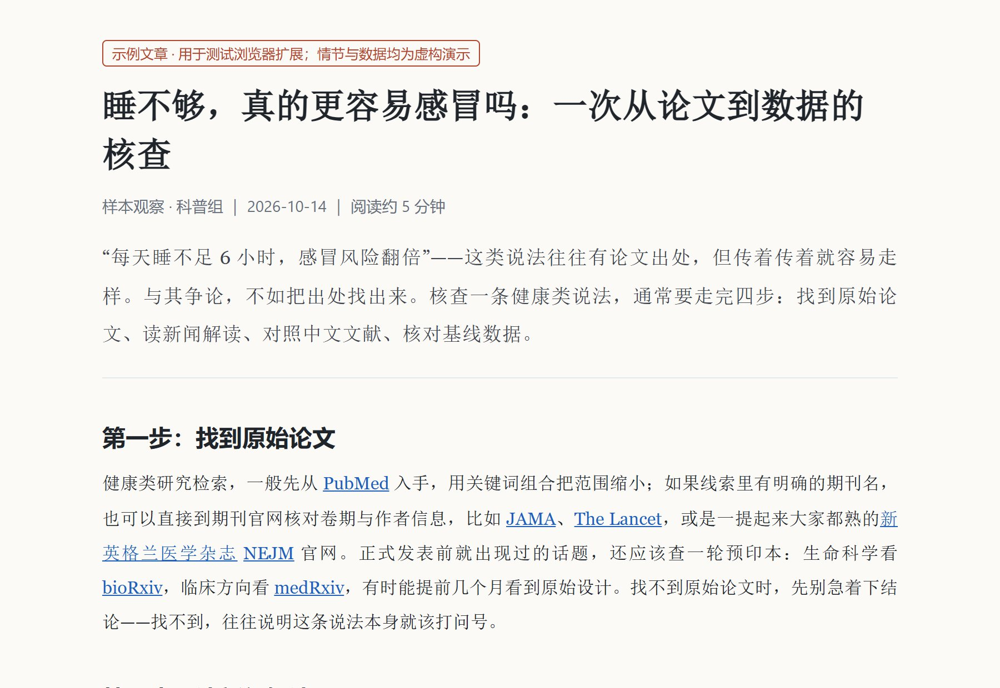
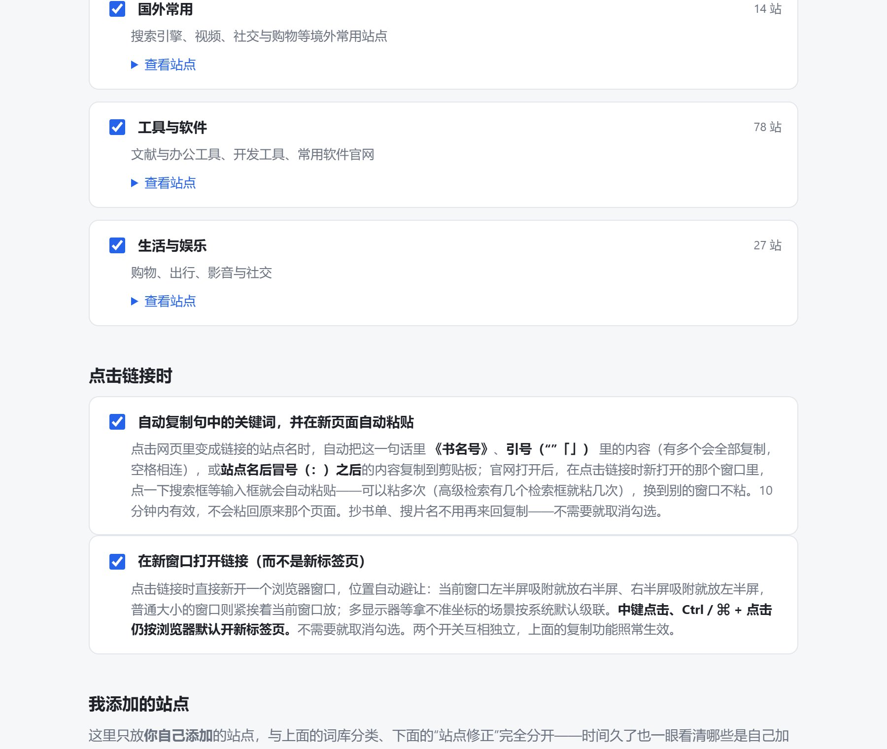
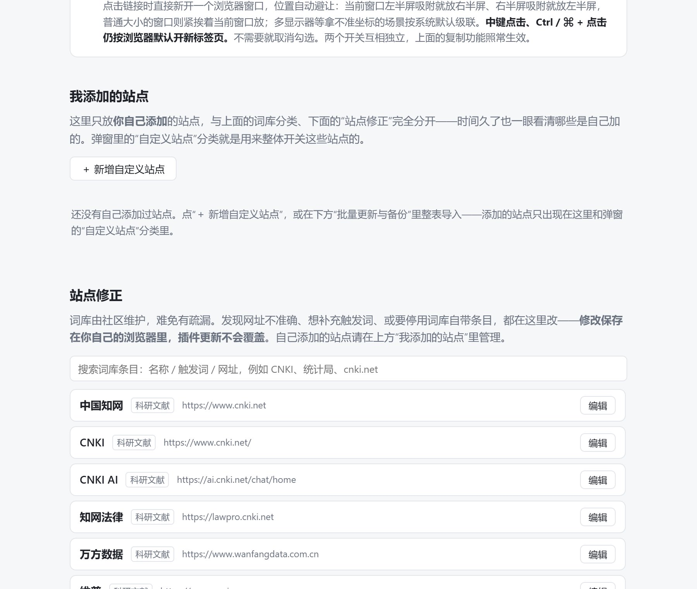
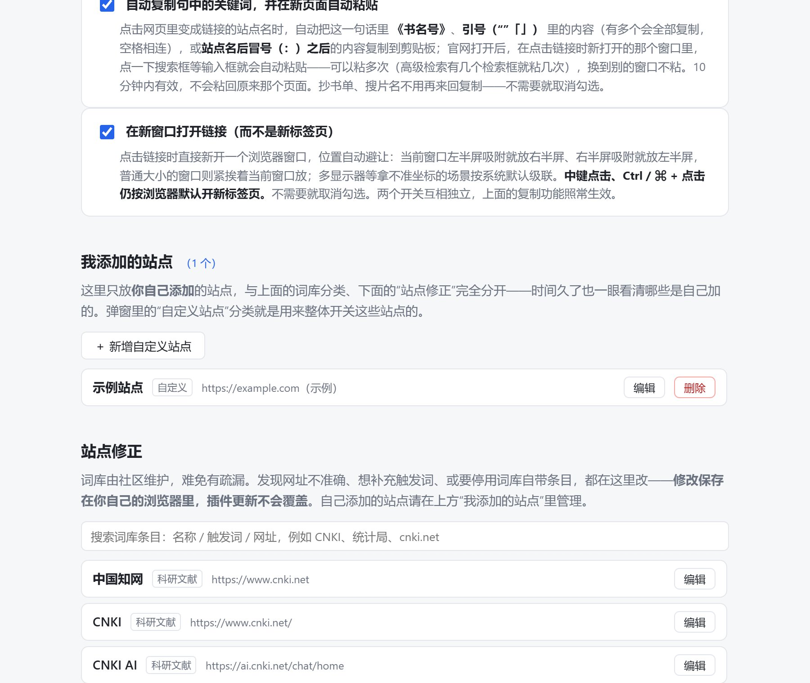
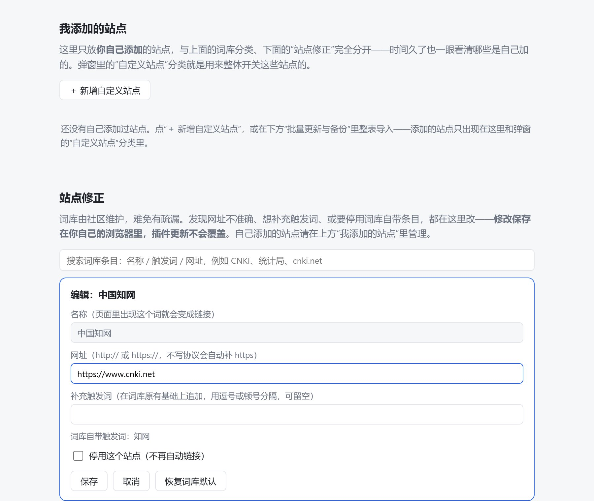

快速上手
- 装好后打开任意网页：正文里的站点名会变成蓝色链接，点击直达官网。
- 点浏览器工具栏上的扩展图标：弹窗里可以输入站点名直接搜索打开官网，也可以开关 6 类站点（默认全开）。
- 要更细的控制：点弹窗底部的"打开完整设置"——改网址、补触发词、加自己的站点。
第一次安装时，本指南会自动打开一页；之后随时可以从弹窗底部的"使用指南"再次打开。
工具栏弹窗：速控 + 搜索直达
点浏览器工具栏上的图标，弹出的小面板从上到下是：分类开关 → 搜索框 → 打开完整设置。分类开关改动即时生效，已打开的页面不用刷新就会跟着变。


网页里效果长这样
正文里的站点名自动变成链接；代码块、已有的链接、输入框里的内容不会被动。长词优先：出现"国家统计局"时整词命中，不会拆成"统计局"；"豆瓣酱""京东大鼓"这类词会自动跳过。

点击链接：自动复制 + 新页面自动粘贴
读到"他在豆瓣搜索《三体》的评论"这类句子时，点一下变黑的"豆瓣"链接：这一句话里可复制的内容会被自动抄走，官网在新窗口打开后，点一下搜索框就自动粘进去——抄书单、搜片名、查词条都不用再来回复制粘贴。
哪些内容会被复制（按优先级；引号 / 书名号有多个时全都要）
- 《书名号》里的内容：他在豆瓣搜索《三体》→ 复制三体；
- 引号里的内容（"…" “…” ‘…’ 「…」 『…』，不含英文直单引号 '…'——否则 don't 这类缩写会被切坏）：知乎回答了"如何入门机器学习"→ 复制如何入门机器学习；
- 站点名之后冒号后到第一个逗号/句号的内容：中国知网：查找学位论文的好地方 → 复制查找学位论文的好地方。
同一句里出现多个引号或书名号时，会全部复制、按顺序用空格连起来：检索主题为“数字经济”与“税收”的文献，点这句话里的站点链接，复制到的是数字经济 税收，打开知网直接粘进检索框，删掉不要的词就行。
三种都没有（比如"中国知网是一个文献数据库"）就只打开链接、不复制。复制之后 10 分钟内有效：在点击链接时新打开的那个浏览器窗口里（关掉“新窗口打开”开关时就是同窗口的新标签页），点任意空输入框（搜索框、文本框均可）即自动粘贴，而且可以粘多次——高级检索有几个检索框就粘几次，粘过的地方有内容就不会重复粘。换到别的窗口不粘，也不会粘回原来那个页面——自动粘贴只在顶层页面生效，内嵌 iframe 里不粘（避免粘回来源页内嵌的页面）。
不需要这个功能：设置页 →「点击链接时」→ 取消勾选"自动复制句中的关键词，并在新页面自动粘贴"即可，随时可以再打开。
另外，点击链接默认新开一个浏览器窗口（而不是新标签页），位置自动避让：当前窗口左半屏吸附就放右半屏、右半屏吸附就放左半屏，普通窗口紧挨着当前窗口放；多显示器等拿不准坐标的场景按系统默认级联。中键点击、Ctrl / ⌘ + 点击仍按浏览器默认开新标签页。不需要就取消勾选"在新窗口打开链接（而不是新标签页）"——两个开关互不影响。

设置页：分类开关 + 点击链接时 + 我添加的站点 + 站点修正
设置页从上到下四块，各管一件事：
- 分类开关：6 类站点加"自定义站点"，勾选即存、即时生效；
- 点击链接时：自动复制 + 自动粘贴、新窗口打开两个开关（默认开，规则见上一节）；
- 我添加的站点：只放你自己添加的站点——和词库分类、和"站点修正"完全分开，时间久了也一眼看清哪些是自己加的；弹窗里的"自定义站点"分类就是整体开关这些站点用；
- 站点修正：只针对词库自带条目——搜到任意条目改网址、补充触发词、停用。
另外还能从 Excel / 表格复制"名称、提示词、网址"三列批量粘贴（名称与词库一致 = 修正，不一致 = 进"我添加的站点"），以及导出 / 导入 JSON 备份、换设备或分享。
所有修改保存在你自己的浏览器里（跟随账号同步），插件更新不会覆盖。



常见问题
看不到效果？
- 本地文件页（
file://）：需要在扩展详情页打开"允许访问文件 URL"，或起一个本地服务（python -m http.server）再打开。 - 刚更新过：到
edge://extensions点扩展卡片的"重新加载"，再刷新页面（F5）。 - 检查对应分类是不是被关掉了——弹窗里一眼就能看到。
PDF 里点链接，整个标签页被替换了？
这是浏览器自带 PDF 阅读器的固有行为（Edge / Chrome 都一样，没有可改的开关）。按住 Ctrl 点击、按鼠标中键，或在链接上右键选"在新标签页中打开"，就能保住 PDF 页面、在新标签里打开官网。网页里的链接本来就是新标签打开，不受影响。
发现某个网址不对，或想加站点？
在设置页"站点修正"里直接改，自己立刻生效；自己添加的站点在"我添加的站点"里管理；也可以导出修正 JSON 发给维护者，或到仓库提 Issue / PR，让所有使用者一起受益。
更新插件，会丢自己添加的网站吗？
不会。你的分类开关、修正和自添加站点都存放在浏览器的扩展存储里（`chrome.storage.sync`），它不随插件更新清空。1.6.0 起自添加站点改存独立键 `siteLinker.userSites`，旧版数据在更新时自动搬过去（读不到时也有旧键回退），无需任何操作。以下三种情况才会丢：卸载后重装、清除浏览器数据、或扩展 ID 变化（如从开发者加载的副本换成商店版）——建议偶尔在"批量更新与备份"里导出一份 JSON。
会收集我的数据吗？
不会。扩展不发起任何网络请求（无远程代码、无统计、无追踪）；唯一的本地存储是你的分类开关和自己填写的修正，保存在你的浏览器账号里用于跨设备同步，开发者读不到。
关于
版本号在弹窗右上角；MIT 许可。content script 骨架借鉴 weiningwei 的 Auto Linkify（MIT）。
In short: this extension turns site names on web pages into direct links to official sites; the toolbar popup adds a local search that jumps straight to official pages (bypassing fake/ad results); everything is editable locally; and it collects nothing. Inside a PDF, hold Ctrl (or middle-click) a link to open it in a new tab.